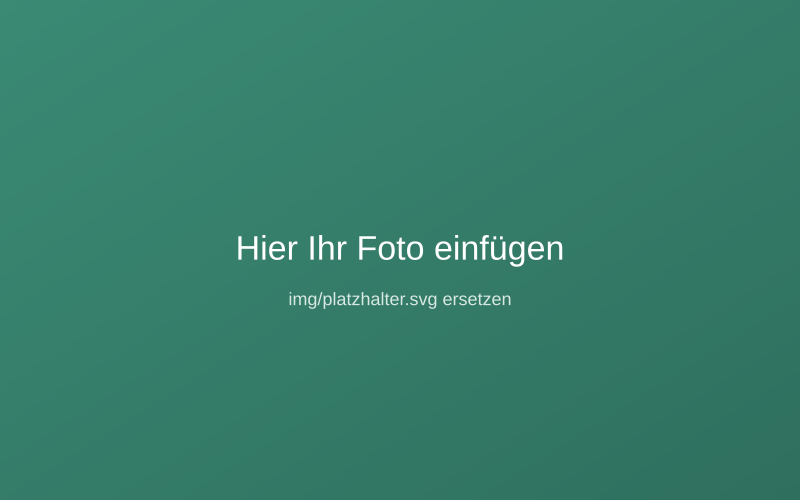

Unser Wochenende in den Bergen

So bearbeiten Sie diesen Beitrag: Dies ist eine Vorlage.
Ersetzen Sie Überschrift, Datum und die Textabsätze unten mit Ihrem eigenen
Inhalt. Das Foto ändern Sie, indem Sie oben bei
src="img/…" den
Dateinamen Ihres hochgeladenen Bildes eintragen.
Hier beginnt Ihr Beitrag. Schreiben Sie so, wie Sie einem guten Freund davon erzählen würden – locker und persönlich. Dieser erste Absatz ist ideal, um kurz zu umreißen, worum es geht.
In weiteren Absätzen können Sie ins Detail gehen: Was haben Sie erlebt? Wer war dabei? Welche Momente sind Ihnen besonders in Erinnerung geblieben? Kurze Absätze lesen sich am angenehmsten.
Ein Zwischentitel für mehr Struktur
Mit Zwischenüberschriften gliedern Sie längere Beiträge und machen sie übersichtlicher – das mögen sowohl Leser als auch Google.